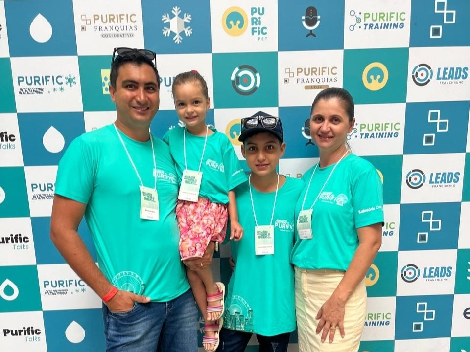
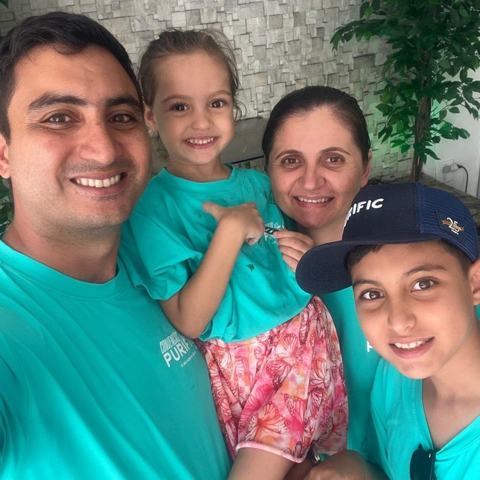

Missão
Levar água de qualidade e proporcionar mais saúde e qualidade de vida para famílias, amigos, empresas e todas as pessoas que confiam em nosso trabalho.
Desde 2020, a Purificá trabalha para oferecer produtos e serviços de excelência em purificação e tratamento de água. Nosso compromisso é levar mais saúde, qualidade de vida e tranquilidade para famílias, empresas e comunidades de toda a região.
Conheça nossos produtos
A Purificá surgiu em 2020 com o propósito de entregar produtos e serviços de qualidade, oferecendo soluções completas em purificação e tratamento de água.
Ao longo de 6 anos de atuação, já atendemos mais de 500 clientes, construindo relações baseadas em confiança, transparência e compromisso.
Atualmente atendemos Novo Progresso, Moraes de Almeida, Castelo de Sonhos, Cachoeira da Serra e Guarantã do Norte, levando atendimento especializado para residências, empresas e estabelecimentos.
Nossa equipe trabalha diariamente para oferecer atendimento especializado, transparência, qualidade nos serviços e um pós-venda que acompanha você em todas as etapas. Conheça um pouco de quem faz parte da Purificá.

Nossa equipe realiza atendimento diretamente na residência ou empresa do cliente, oferecendo instalação, manutenção, troca de refis e assistência técnica especializada. Também acompanhamos o cliente após a compra, garantindo atendimento rápido, orientação adequada e suporte com transparência e honestidade.
Trabalhamos com equipamentos e soluções de marcas reconhecidas no mercado, sempre buscando oferecer segurança, qualidade e opções para diferentes necessidades.
Mais do que comercializar equipamentos, a Purificá trabalha para levar água de qualidade, mais saúde e tranquilidade para as pessoas que fazem parte da nossa vida.
Levar água de qualidade e proporcionar mais saúde e qualidade de vida para famílias, amigos, empresas e todas as pessoas que confiam em nosso trabalho.
Ser referência regional em purificação e tratamento de água, reconhecida pela excelência dos serviços, pela qualidade dos produtos e pela confiança dos clientes.
Qualidade em serviços especializados
Produtos aprovados pelo Inmetro
Confiança e transparência
Honestidade com o cliente
Atendimento imediato
Pós-venda com garantia
Clientes atendidos
De experiência na região
Atendidas pela Purificá
Reconhecidas no mercado
Nossa equipe atende residências, empresas e estabelecimentos comerciais em diferentes cidades, sempre com agilidade, responsabilidade e suporte especializado.
Nossa equipe está pronta para ajudar você a encontrar o purificador ideal para sua necessidade.